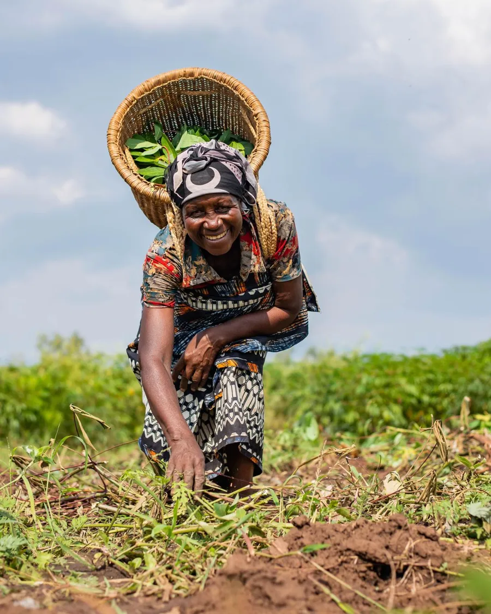
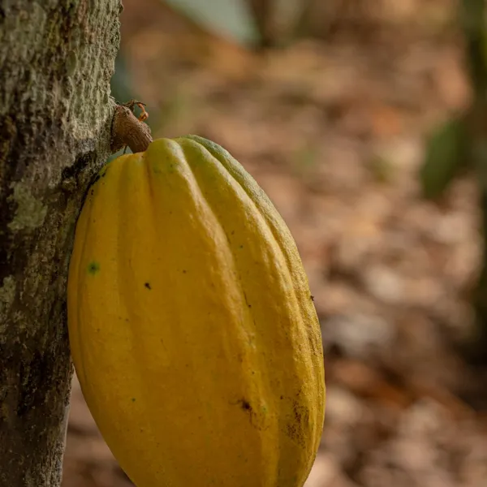
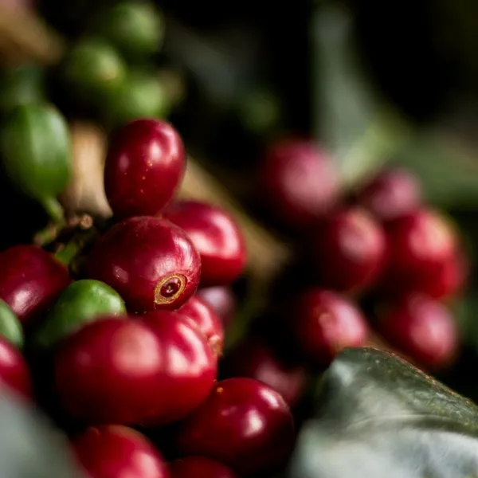
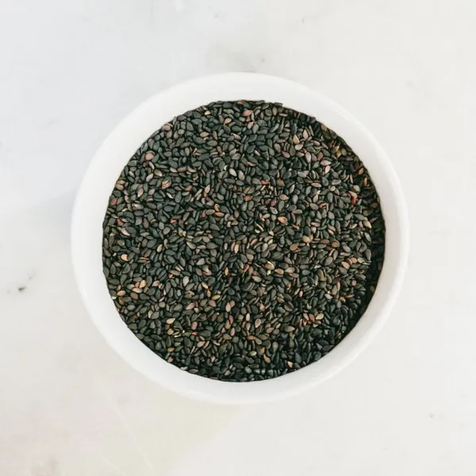
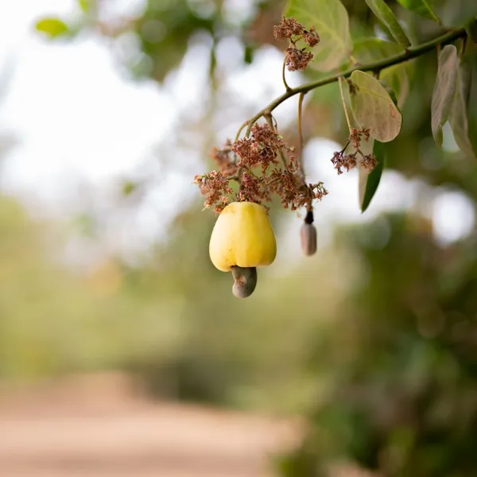
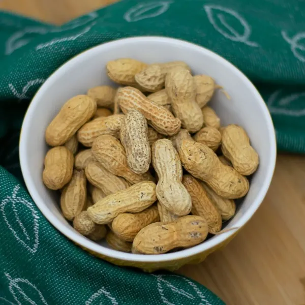
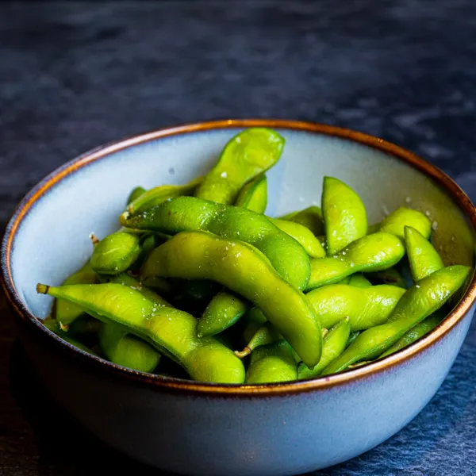
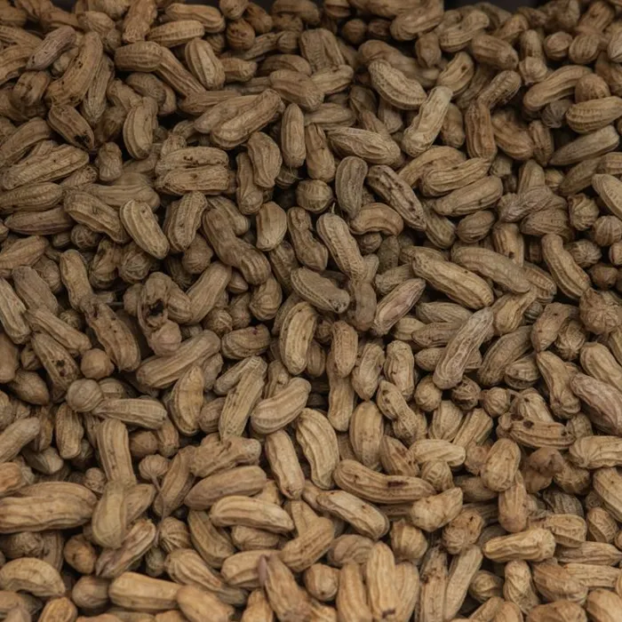

Agricultural commodity exporters
Six flagship crops, sourced to a single standard. Every lot is graded, tested, and documented before it leaves the origin.

Products
Origin and grade lines are as listed on the business's existing site. Swipe or use the arrows.

CocoaThe heart of fine chocolate
Sun-fermented, fully-dried cocoa beans with a deep, complex aroma. Sorted for uniform bean count and low defect rate, ready for premium chocolate and cocoa processing.
Origin West Africa
Grade Grade I · Fair Fermented

CoffeeAltitude-grown, cupping-scored
Green Arabica and Robusta lots, hand-selected and screen-graded. Every consignment is cupping-scored for consistency and shipped moisture-controlled for freshness.
Origin East African Highlands
Grade Screen 15+ · SCA 82

SesamePurity you can measure
Cleaned white and hulled sesame seeds with 99.95% purity and high oil content. Ideal for oil pressing, tahini, and confectionery across international markets.
Origin Sahel Belt
Grade 99.95% Purity · 50% Oil

CashewKernels with quiet luxury
Raw cashew nuts with high, consistent nut count and low moisture. Available as raw-in-shell (RCN) or processed white wholes for retail and industrial buyers.
Origin Coastal Plantations
Grade W320 · 48 lbs/bag

GroundnutsBold-roast confidence
Aflatoxin-tested groundnuts with uniform kernel size and rich flavour. Suited for oil extraction, roasting, and snack manufacturing at scale.
Origin Savannah Region
Grade Bold 50/60 · Aflatoxin < 4ppb

SoybeansProtein for the world
Non-GMO soybeans with high protein content and clean sorting. A dependable feedstock for oil, meal, and plant-protein production year-round.
Origin Central Belt
Grade Non-GMO · 38% Protein
Representative stock photos, not the business's own. Credits in CREDITS.md.
About
Cameroon Agro Trading LTD is an agricultural commodity supplier built on long-standing relationships with growers and a refusal to compromise on quality. We bridge the distance between smallholder farms and international buyers with transparency at every step.
Trading premium crops since
1998
Process
Direct relationships with cooperatives and farms let us select the right crop, region, and season for your requirement.
Each lot is sampled and lab-tested for moisture, purity, defect rate, and contaminants against your target grade.
Phytosanitary certificates, certificates of origin, and full traceability records are prepared before loading.
Consolidated, containerised, and shipped with real-time updates from warehouse to destination port.

Reach
Figures as stated on the business's existing site; not independently verified.
Ports we ship to
Contact
Share your target commodity, grade, and volume. The trade desk will come back with availability and shipping terms.
No opening hours are listed on the business's existing site.
Commodity, grade, volume: send it to the trade desk.